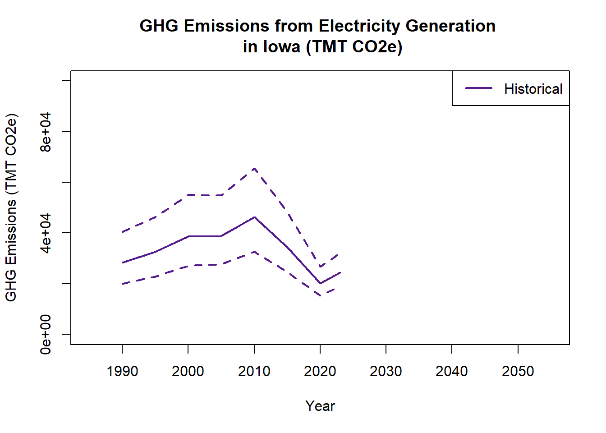
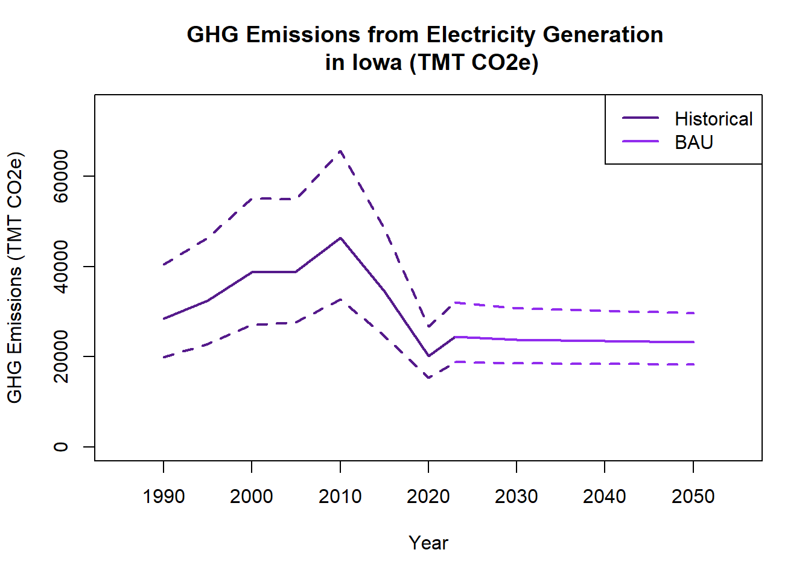

"IowaEmissions" <- function(input.filename = "NAME", energy.source = 1, nyears = 1, iseed = 739415, nreps = 10000)
{ # set seed
set.seed(iseed)
# load library
library(triangle)
# import data
electricity.data <- read.csv(file = input.filename, header = TRUE, sep = ",", fill = FALSE)
# validate input data is numeric
for(n in (1:nyears)) { electricity.data[ ,n+1] <- as.numeric(electricity.data[ ,n+1]) }
# check input data
## energy sources
check.energy.source <- length(electricity.data[ ,1]) == energy.source
if(!check.energy.source) {stop("Warning: The numer of energy sources in the function call
does not equal the number in the input file")}
## co2 emission factors
for(efact in (1:energy.source)) { check.CO2.ef <- electricity.data[efact,2] >= 0
if(!check.CO2.ef) {stop("Error: CO2 EF must be greater than or equal to 0, check input file.")}
check.CO2.min <- electricity.data[efact,3] <= electricity.data[efact,2] & electricity.data[efact,3] >= 0
if(!check.CO2.min) {stop("Error: Minimum CO2 EF must be greater than or equal to 0 and less
than the EF value, check your input file.")}
check.CO2.max <- electricity.data[efact,4] >= electricity.data[efact,2]
if(!check.CO2.max) {stop("Error: Maximum CO2 EF must be greater than or equal to EFvalue,
check your input file.")} }
## electricity production
for(e in (1:nyears)) { for(mwh in (1:energy.source)) { check.production <- electricity.data[mwh,5+((e-1)*2)] >= 0
if(!check.production) {stop("Error: Electricity production must be greater than or equal to 0,
check input file.")}
check.prod.sd <- electricity.data[mwh,6+((e-1)*2)] >= 0
if(!check.prod.sd) {stop("Error: Production standard deviations must be greater than or equal to 0,
check input file.")} } }
# simulate nreps of EFs and production amount
## co2 emission factors
co2.ef.sim <- matrix(0, nrow = energy.source, ncol = nreps)
for (co in (1:energy.source)) { co2.ef.sim[co, ] <- rtriangle(nreps, a = electricity.data[co,3], b = electricity.data[co,4],
c = electricity.data[co,2]) }
## production amount
prod.amount.sim <- matrix(0, nrow = energy.source * nyears, ncol = nreps)
for(m in (1:nyears)) {
for(p in (1:energy.source)) {
prod.amount.sim[p+(energy.source*(m-1)),] <- rnorm(nreps, mean = electricity.data[p,5+((m-1)*2)],
sd = electricity.data[p,6+((m-1)*2)]) } }
# calculate emissions
# units: emissions in TMT CO2, production in MWh, EF in g CO2/kWh
# remember 1 MWh = 1000 kWh & 1 kg = 1000 g & 1 TMT = 1000000 kg
## deterministic estimation
deterministic.co2.eq <- matrix(0, nrow = energy.source, ncol = nyears)
for (y in (1:nyears)) {
for (d in (1:energy.source)) {
deterministic.co2.eq[d,y] <- ((electricity.data[d,2] * electricity.data[d,5+((y-1)*2)])/1000000) } }
## probabilistic estimation
probabilistic.co2.eq <- matrix(0, nrow = energy.source * nyears, ncol = nreps)
for (y in (1:nyears)) {
for (p in (1:energy.source)) {
probabilistic.co2.eq[p+(energy.source*(y-1)), ] <- ((co2.ef.sim[p, ] *
prod.amount.sim[p+(energy.source*(y-1)),])/1000000) } }
## sum the individiual fuel sources to obtain total CO2 eq. emissions
probabilistic.CO2.eq.total <- matrix(0, nrow = nyears, ncol = nreps)
for(y in (1:nyears)) {
probabilistic.CO2.eq.total[y, ] <- apply(probabilistic.co2.eq[(1+((y-1)*energy.source)):(energy.source + ((y-1)*energy.source)),], MAR = 2, FUN = "sum") }
# estimate median and 95% CI
## create matrix for storing results
electricity.emissions.2 <- matrix(0, nrow = nyears, ncol = 3)
for (b in (1:nyears)) {
electricity.emissions.2[b,1] <- median(probabilistic.CO2.eq.total[b, ])
quant <- quantile(probabilistic.CO2.eq.total[b, ], probs = c(0.025,0.975))
electricity.emissions.2[b,2] <- quant[1]
electricity.emissions.2[b,3] <- quant[2]
check.emissions.2 <- deterministic.co2.eq[b] >= electricity.emissions.2[b,2] &
deterministic.co2.eq[b] <= electricity.emissions.2[b,3]
if(!check.emissions.2) {cat("Warning: Deterministic solution for year ",b," is outside of its respective confidence interval.")} }
# return statement
colnames(electricity.emissions.2) <- c("Median TMT CO2", "2.5 Percentile", "97.5 Percentile")
return(electricity.emissions.2)
}Embodied Emissions
Completed with CSU’s ESS 545: Greenhouse Gas Inventories.
Renewable Energy Emissions
While renewable energy is more efficient and less carbon intensive, greenhouse gas emissions are still generated from the production, transportation, and maintenance of these systems. Such contributions are important factors when considering the viability of renewable energy projects like utility-scale wind. Thus, the goal of this inventory is to compare the emissions from electricity generated with wind to more traditional sources such as coal and natural gas in the state of Iowa. Results are then analyzed to inform policymakers interested in diversifying the energy mix with a subsequent mitigation plan to minimize future climate change impacts drafted for the purpose of this assignment. It should be noted that the recommendation did not satisfy the American Carbon Registry’s 3-Prong Test of Additionality and is therefore not plausible.
Embodied Emissions in Wind Electricity
Iowa is a prime example of how the global shift towards renewable energy can impact local scales. Its flat topography in the middle of the Great Plains exposes this region to consistent wind patterns that increase in speed as they blow through the open landscape. This creates an opportunity for utility-scale wind turbine investment since productivity rates for electricity are very promising. The state’s energy portfolio has already expanded in this direction as legislation compels the energy industry to improve grid security while maintaining environmental integrity and economic growth. Currently, Iowa’s grid is mostly powered with coal, natural gas, and petroleum sources but the early 2000s saw a significant increase in the deployment of wind.
Embodied emissions arise from this renewable energy source as the manufacturing of turbine parts, distribution of the product to its field site, and ongoing maintenance for long-lasting performance generate indirect emissions. It is important to consider these impacts as most wind turbines are not constructed on site and, despite the handful of manufacturing facilities present in eastern Iowa, will need to be driven to the west side of the state via semi-truck where most wind farms are located. Thus, greenhouse gas emissions from electricity produced with wind sources should be calculated to fairly compare electricity production methods in Iowa.
Estimates of each energy source’s contribution are based on existing literature and previous case studies with a consistent reporting unit of grams of carbon dioxide equivalents (g CO2) as emission factors. The objective of this study is to compare embodied utility-scale wind emissions to the other three electricity production sources in the state of Iowa to determine if this production alternative is the best method for reducing energy emissions, while also exploring how these systems can be effectively implemented.
Calculating Inventory Emissions
Using R, I made a function to estimate annual carbon dioxide emissions (in thousand metric tonnes) from electricity production for application with data sets, if desired. This script was originally developed by me on April 2, 2025 with its last update on May 5, 2025 and is intended to be used with Iowa’s energy portfolio data published in 2024. Emissions factors are based on the 2006 IPCC Guidelines for Approach II with Monte Carlo simulations that are informed by the equation Emissions = Activity * Emissions Factor with additional guidance from my professor, Dr Ogle. Activity data is collected in megawatt hours (MWh) using a top-down data collection method to quantify the total amount of electricity produced per energy source each year. Approach II is outlined in the Guidelines with steps that identify specific categorical uncertainties, randomly select the starting value for iterations, estimate annual emissions, and then store results according to the project’s goals. A 95% confidence interval is assumed for each nonrenewable energy source.
Below is a list of function arguments:
input.filenamedescribes the name of the comma delimited file with input activity data in columns describing emissions from electricity generated via wind, photovoltaic solar, coal, natural gas, and petroleum in the state of Iowaenergy.sourcereflects the number of electricity production methods included in the inventory; defaults to 1nyearsrepresents the number of years of data; defaults to 1iseedis the initial seed value for random draws; defaults to the system’s datenrepsrefers to the number of Monte Carlos iterations; defaults to 10,000
Mitigation Scenario
First, historical emissions are estimated to provide an accurate baseline to compare utility-scale wind embodied emissions. The input file contains electricity production amounts in Iowa sourced from coal, natural gas, oil, and wind energy along with their carbon dioxide emission factors and standard deviations. Activity data is collected on a five-year interval excluding 2020-2023 given the limited data available in this moment.
# historical emissions referencing inventory for baseline
historical.emissions <- IowaEmissions(input.filename = "data/IowaWind.csv",
energy.source = 4, nyears = 8,
iseed = 739415, nreps = 10000)Warning: Deterministic solution for year 2 is outside of its respective confidence interval.Warning: Deterministic solution for year 3 is outside of its respective confidence interval.Warning: Deterministic solution for year 4 is outside of its respective confidence interval.Warning: Deterministic solution for year 5 is outside of its respective confidence interval.Warning: Deterministic solution for year 6 is outside of its respective confidence interval.Warning: Deterministic solution for year 7 is outside of its respective confidence interval.Warning: Deterministic solution for year 8 is outside of its respective confidence interval.# plot emission estimates
years <- c(1990,1995,2000,2005,2010,2015,2020, 2023)
plot(x = years, y = historical.emissions[,1], type = "l", lwd = 2, col = "purple4",
xlim = c(1985, 2055), xlab = "Year",
ylim = c(0,100000), ylab = "GHG Emissions (TMT CO2e)",
main = "GHG Emissions from Electricity Generation \n in Iowa (TMT CO2e)")
# uncertainty
lines(x = years, y = historical.emissions[,2], lty = 2, lwd = 2, col = "purple4")
lines(x = years, y = historical.emissions[,3], lty = 2, lwd = 2, col = "purple4")
# legend
legend("topright", "Historical",
lwd = c(2,2,2), lty = c(1,1,1),
col = "purple4")
Plot BAU.
# projected emissions for BAU using simple linear regression
projected.emissions <- IowaEmissions(input.filename = "data/IowaProjections.csv",
energy.source = 4, nyears = 2,
iseed = 739415, nreps = 10000)Warning: Deterministic solution for year 1 is outside of its respective confidence interval.Warning: Deterministic solution for year 2 is outside of its respective confidence interval.# plot baseline
years <- c(1990,1995,2000,2005,2010,2015,2020, 2023)
plot(x = years, y = historical.emissions[,1], type = "l", lwd = 2, col = "purple4",
xlim = c(1985, 2055), xlab = "Year",
ylim = c(0,75000), ylab = "GHG Emissions (TMT CO2e)",
main = "GHG Emissions from Electricity Generation \n in Iowa (TMT CO2e)")
# uncertainty
lines(x = years, y = historical.emissions[,2], lty = 2, lwd = 2, col = "purple4")
lines(x = years, y = historical.emissions[,3], lty = 2, lwd = 2, col = "purple4")
# compare to BAU
years.projected <- c(2023, 2030, 2050)
lines(x = years.projected, y = c(historical.emissions[8,1], projected.emissions[1,1],
projected.emissions[2,1]), lty = 1, lwd = 2, col = "purple2")
# uncertainty
lines(x = years.projected, y = c(historical.emissions[8,2], projected.emissions[1,2],
projected.emissions[2,2]), lty = 2, lwd = 2, col = "purple2")
lines(x = years.projected, y = c(historical.emissions[8,3], projected.emissions[1,3],
projected.emissions[2,3]), lty = 2, lwd = 2, col = "purple2")
# legend
legend("topright", c("Historical", "BAU"),
lwd = c(2,2,2), lty = c(1,1,1),
col = c("purple4", "purple2"))
Plot mitigation.
# projected emissions with mitigation scenarios (mitigation added to years 3-6)
mitigation.emissions <- IowaEmissions(input.filename = "data/IowaProjections.csv", energy.source = 4,
nyears = 6, iseed = 739415, nreps = 10000)Warning: Deterministic solution for year 1 is outside of its respective confidence interval.Warning: Deterministic solution for year 2 is outside of its respective confidence interval.Warning: Deterministic solution for year 3 is outside of its respective confidence interval.Warning: Deterministic solution for year 4 is outside of its respective confidence interval.Warning: Deterministic solution for year 5 is outside of its respective confidence interval.Warning: Deterministic solution for year 6 is outside of its respective confidence interval.# plot baseline
years <- c(1990,1995,2000,2005,2010,2015,2020, 2023)
plot(x = years, y = historical.emissions[,1], type = "l", lwd = 2, col = "purple4",
xlim = c(1985, 2055), xlab = "Year",
ylim = c(0,75000), ylab = "GHG Emissions (TMT CO2e)",
main = "GHG Emissions from Electricity Generation \n in Iowa (TMT CO2e)")
# uncertainty
lines(x = years, y = historical.emissions[,2], lty = 2, lwd = 2, col = "purple4")
lines(x = years, y = historical.emissions[,3], lty = 2, lwd = 2, col = "purple4")
# compare to BAU
years.projected <- c(2023, 2030, 2050)
lines(x = years.projected, y = c(historical.emissions[8,1], mitigation.emissions[1,1], mitigation.emissions[2,1]), lty = 1, lwd = 2, col = "purple2")
# uncertainty
lines(x = years.projected, y = c(historical.emissions[8,2], projected.emissions[1,2], projected.emissions[2,2]), lty = 2, lwd = 2, col = "purple2")
lines(x = years.projected, y = c(historical.emissions[8,3], projected.emissions[1,3], projected.emissions[2,3]), lty = 2, lwd = 2, col = "purple2")
# M1
lines(x = years.projected, y = c(historical.emissions[8,1], mitigation.emissions[3,1], mitigation.emissions[4,1]), lty = 1, lwd = 2, col = "darkblue")
# uncertainty
lines(x = years.projected, y = c(historical.emissions[8,2], mitigation.emissions[3,2], mitigation.emissions[4,2]), lty = 2, lwd = 2, col = "darkblue")
lines(x = years.projected, y = c(historical.emissions[8,3], mitigation.emissions[3,3], mitigation.emissions[4,3]), lty = 2, lwd = 2, col = "darkblue")
# M2
lines(x = years.projected, y = c(historical.emissions[8,1], mitigation.emissions[5,1], mitigation.emissions[6,1]), lty = 1, lwd = 2, col = "violet")
# uncertainty
lines(x = years.projected, y = c(historical.emissions[8,2], mitigation.emissions[5,2], mitigation.emissions[6,2]), lty = 2, lwd = 2, col = "violet")
lines(x = years.projected, y = c(historical.emissions[8,3], mitigation.emissions[5,3], mitigation.emissions[6,3]), lty = 2, lwd = 2, col = "violet")
# legend
legend("topright", c("Historical", "BAU", "M1", "M2"),
lwd = c(2,2,2,2), lty = c(1,1,1,1),
col = c("purple4", "purple2", "darkblue", "violet")) 
Given the current electricity production trends in the state of Iowa, a historical scenario mirrors the diversifying portfolio of energy sources between 1990 and 2023. Looking towards the future, a business-as-usual (BAU) scenario is drafted based on the existing infrastructure for electricity production utilizing mostly coal, natural gas, and wind. The first mitigation scenario (M1) examines the increasing investment in natural gas electricity production seen in Figure 1 with a 45% amplification of this energy source by 2030 and another 40% increase by 2050. A statewide initiative has already been set in motion with Iowa’s largest energy suppliers, MidAmerican Energy and Alliant Energy, committing to the construction of a natural gas power plant in Adair County (Eller 2015) so M1 is comparable to the state’s current activities. The second mitigation scenario (M2) predicts how Iowa’s energy portfolio and emissions would be impacted by a comprehensive transition to wind-based electricity production. Chinmoy and their colleagues (2019) studied the social and economic benefit of a scenario like M2, highlighting the enhanced quality of living for residents and improved reliability of wind power. Coal power plants would be eliminated from the energy portfolio with production goals reallocated to wind turbines. BAU, M1, and M2 would all project emissions through 2050 for all Iowans as the state energy goals previously identified in the study.